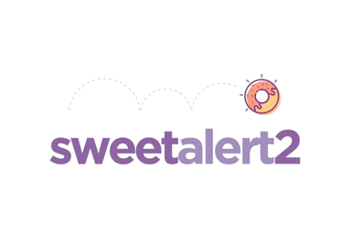

EVENTS.
Sistema web para la gestión, el control organizado y la optimizacion de eventos institucionales del SENA.
SENA Regional Caldas - Centro de Procesos Industriales y Construcción
Equipo de Desarrollo
El Desafío de la Gestión Manual de Eventos
La gestión actual de actividades institucionales en el SENA Regional Caldas fragmenta la experiencia del usuario y dificulta el control administrativo. Para superar esta falta de eficiencia y centralización, se requiere una solución tecnológica integral y automatizada.
Control de Asistencia Tedioso
El registro de asistencia mediante planillas físicas resulta lento y obsoleto para eventos de alta concurrencia.
Aceptación Descentralizada
Procesos de evaluación fragmentados debido al uso de herramientas y formularios aislados, limitando el control y la medición de experiencia de usuario en tiempo real.
Análisis de Datos
Ausencia de un sistema estadístico consolidado que organice la información y genere reportes analíticos precisos.
Agenda Vulnerable
La programación manual de eventos incrementa el riesgo de errores en el suministro de información y reserva de espacios.
Abstract
"El proyecto Events surge como una solución tecnológica orientada a optimizar la gestión de eventos dentro del Servicio Nacional de Aprendizaje (SENA). Busca centralizar y optimizar estos procesos, facilitando la labor tanto de los organizadores como de los asistentes."
Abstract
"The Events project emerges as a technological solution aimed at optimizing event management within the National Learning Service (SENA). It seeks to centralize and optimize these processes, facilitating the work of both organizers and attendees."
Fundamentos del Sistema
Justificación
La implementación de Events optimiza la gestión institucional mediante el control de asistencia con geolocalizacion, la aplicación de encuestas y la generación automatizada de reportes detallados. Esto garantiza una administración de eventos eficiente, organizada y confiable, fundamentada en datos precisos para la toma de decisiones.
Contexto Actual del Proceso
- Método Tradicional: Dependencia absoluta de planillas físicas y formatos impresos para el control de asistencia y agendamiento de espacios.
- Encuesta aisladas: Recopilación tardía de opiniones mediante encuestas o formularios dispersos.
- Procesos Fragmentados: Carencia de herramientas centralizadas para consolidar y generar métricas y reportes institucionales.
Alcance del Sistema
Cambiar la programación manual de eventos por un sistema centralizado de reservas en línea.
Registrar la participación en tiempo real controlando la ubicación exacta y precisa del usuario.
Recopilar la opinión y satisfacción de los asistentes de forma centralizada y digital al finalizar el evento.
Generar estadísticas y métricas organizadas de manera automática para facilitar la toma de decisiones.
Propósito y Solución
Optimizar la gestión global de eventos institucionales.
EVENTS es una plataforma web centralizada para el SENA Regional Caldas que automatiza la reserva de espacios, el control de asistencia, la medición de satisfacción y la generación de reportes estadísticos, reemplazando por completo los procesos manuales.
1. Reservación de Espacios
Desplegar un módulo de gestión que controle la asignación, agendas y disponibilidad de ambientes institucionales de forma digital.
2. Registro de Asistencia y Mapeo
Implementar un sistema con geolocalización para identificar y almacenar la participación de los usuarios en tiempo real.
3. Medición de Satisfacción
Desarrollar módulos de encuestas digitales integradas para evaluar el nivel de aceptación y calidad de las actividades.
4. Análisis Estadístico
Consolidar apartados métricos para generar informes automatizados y descargables que apoyen la toma de decisiones.
Arquitectura & Tech Stack
Frontend
Interfaz y ExperienciaEstructura visual moderna y componentes altamente responsivos.

SweetAlert2Backend
Lógica y ServiciosProcesamiento seguro en el servidor, gestión ágil de peticiones HTTP e integración de módulos especializados.
Base de Datos
Persistencia de DatosAlmacenamiento relacional diseñado bajo rigurosos estándares de normalización e integridad de datos.
Impacto y Beneficios
-
Impacto Social
Mejora la organización, fortalece la comunicación mediante encuestas y aporta a la mejora continua.
-
Impacto Económico
Optimiza recursos administrativos y reduce drásticamente tiempos y costos de gestión manual.
-
Impacto Ambiental
Disminuye el uso de papel mediante la digitalización de procesos, promoviendo prácticas sostenibles.
-
Impacto Tecnológico
Impulsa la transformación digital del SENA, modernizando y centralizando la gestión de sus procesos.
Organizadores
Control en tiempo real, reportes automáticos y optimización en la planeación.
Participantes
Registro rápido, opinión directa por encuestas y mayor interacción institucional.
Administradores
Acceso centralizado, visualización clara de datos y mejor seguimiento global.
Institución SENA
Modernización digital, mayor calidad en eventos y decisiones basadas en datos reales.
"EVENTS no es solo un software de registro, es el motor de transformación para la excelencia en la gestión de eventos del SENA."